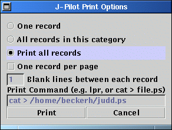

JPilot comes with a handy feature - printing. It uses the ability to export any data in postscript format. So, printing out ouf JPilot will create a postsript file that can either be printed directly or written to a file.
To print, click on the File entry in the JPilot menu and then hit Print. This will bring up a window with the printing options.
First you can select wether to print
Further more you can specify to print just one record onto one page (one record per page) which is a waste of paper but comes in handy sometimes.
To specify the blank lines between the records enter a number after that.
Now, in the field Print Command you can specify what
to do with the exported file. Remember that JPilot exports a
postscript file. That file can be send to different commands.
To actually print the file just enter lpr. JPilot
will utter the command lpr printfile.ps
which will result in the file being printed. To write the
file to disc, just replace the lpr command with the
cat command and a pipe together with a target file
like shown in brackets. That will do.
Hitting print will print, hitting cancel will cancel - but you already guessed it!